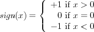

How to Design Programs (Crash Course)
1 Some Racket, First Design
1.1 Racket Mechanics
Racket is an untyped functional programming/scripting language. DrRacket is its primary IDE but if you don’t like it, you can find EMACS and VI modes for Racket on the web.
In Racket you define and use functions. Period.

Racket has many kinds of data that you know from other programming languages: a complete number hierarchy, including complex numbers; booleans (#t and #f); strings ("hello world"); chars; etc.
a constructor, s in the running example, which consumes as many values as there are fields and creates a structure instance that belongs to this specific evaluation of the structure definition;
a predicate, s? in the example, which consumes one value and determines whether it is an instance of this particular evaluation of a structure definition; and
as many structure selectors, s-f, s-g, and s-h here, which consume one value, test whether it is an instance of the structure, and – if so – extract the value in the specified field.
the control panel;
the definitions area;
the interaction area.
| > (+ 1 2 3 4 5 6 7 8 9 0) |
45 |
| > (- 1 2 3 4) |
-8 |
| > (sin 0) |
0 |
| > (sqrt -1) |
0+1i |
| > (string-length "hello world") |
11 |
| > (sign 55) |
1 |
| > (sign -9) |
-1 |
| > (sign 0) |
0 |
1.2 Design Recipe
Analyze the problem. The analysis should identify the information that you need to represent as data in your chosen language. Since Racket is an untyped language, you can use structured English to document this decision. The result is called a data definition.
A data definition names and describes a set of elements from the ever-expanding universe of data in Racket.
The problem analysis should also produce a concise description of the program’s task. One line of precise English suffices; keep in mind that you should describe what the function computes not how it computes it.
In addition, formulate a function signature using the data definitions from step 1 and the built-in sets of data.
A concise purpose statement as in step 2 is too abstract to provide much insight into the concrete workings of the function. It is therefore important to illustrate the purpose statement with examples. To be precise, the examples should illustrate what output functions should produce for which inputs.
To this end you need to generate input data. Use the data definition. It tells you whether some piece of data belongs to a chosen set, and it also tells you how to generate input examples. (If it doesn’t, it isn’t a data definition.) The organization of the data definition implicitly suggests which kinds of inputs you should consider.
Also use the problem statement. It may point out special cases and you need to understand what they should do.
If you cover a good part of the input space, you will get a good understanding of the capabilities and limits of the function. When anything is ambiguous, ask the "customer" for a specification of the problem statement now.
You can now turn the data definition for the inputs into a template, that is an outline of the program. This is not some informal pseudo-code essay, but a transformation of all the knowledge in the data definition into a code layout.
Note that all template for functions with the same input signature are identical. The construction of the template does not exploit any knowledge about the output or the functionality of the program.
Technically you can create the template right after step 2. Creating input examples may help, however.
Now it is time to code, that is, to define the function.
The template lays out what data the function consumes. Any information that it computes must be the result of combining these pieces of data. The combination can exploit Racket functions, functions you have defined, functions you intend to define – create a stub for those – and nothing else.
Last but not least, you turn the examples into unit tests so that the Racket unit testing framework can run the tests and report problems (if any).
Add the import specification (require rackunit) to the top of the file to load the unit testing framework.
#lang racket
(require rackunit)
#| – – – – – – – – – – – – – – – – – – – – – – – – – –
PROBLEM STATEMENT
Design a function that determines whether a Cartesian point
is within a rectangle in the Cartesian plain. Assume that
the rectangle’s sides are parallel to the two axes. |#
;; DATA DEFINITION
(struct point (x y) #:transparent)
;; A Point is (point Number Number)
(struct rectangle (xmin xmax ymin ymax) #:transparent)
;; A Rectangle is (rectangle Number Number Number Number)
;; Assume: (rectangle xmin xmax ymin ymax) implies
;; – (< xmin xmax)
;; – (< ymin ymax)
;; is the Cartesian point p within the rectangle r?
;; Point Rectangle -> Boolean
;; given (point 3 4) and (rectangle 0 10 0 10), the point is in
;; given (point -3 4) and (rectangle 0 10 0 10), the point is out
(define (in? p r)
(and (<= (rectangle-xmin r) (point-x p) (rectangle-xmax r))
(<= (rectangle-ymin r) (point-y p) (rectangle-ymax r))))
(check-equal? (in? (point 3 4) (rectangle 0 10 0 10)) #t)
(check-equal? (in? (point -3 4) (rectangle 0 10 0 10)) #f)
| (define (in? p r) |
| ... (point-x p) ... (point-y p) ... |
| ... (rectangle-xmin r) (rectangle-xmax r) ... |
| ... (rectangle-ymin r) (rectangle-ymax r) ...) |
#lang racket
(require rackunit)
#| – – – – – – – – – – – – – – – – – – – – – – – – – –
PROBLEM STATEMENT
Design a function that determines whether a Cartesian point
is within some given shape. A shape can be either a
rectangle whose sides are parallel to the two axes or a
circle whose extent is determine by a center and a radius.
|#
;; DATA DEFINITION
(struct point (x y) #:transparent)
;; A Point is (point Number Number)
(struct rectangle (xmin xmax ymin ymax) #:transparent)
(struct circle (x y r))
;; A Shape is one of:
;; – (rectangle Number Number Number Number)
;; – (circle Number Number Number)
;; is the Cartesian point p within the shape s?
;; Point Shape -> Boolean
;; (circle 0 0 5) and (point 3 4) is in
;; (circle 0 0 5) and (point 10 10) is out
(define (in? p s)
(cond
[(rectangle? s) (rectangle-in? p s)]
[(circle? s) (circle-in? p s)]))
;; Point Rectangle -> Boolean
;; is the Cartesian point p within the rectangle r?
(define (rectangle-in? p r)
#f)
;; Point Circle -> Boolean
;; is the Cartesian point p within the circle s?
(define (circle-in? p s)
#f)
(check-equal? (in? (point 3 4) (circle 0 0 5)) #t)
Figure 2 is about a data definition that unions two disjoint sets: the set of circle representations and the set of rectangle representations. Every language has some way of representing unions; in an untyped language such as Racket the programmer uses English to describe the union.
| (define (in? p s) |
| (cond |
| [(rectangle? s) |
| ... (point-x p) ... (point-y p) ... |
| ... (rectangle-xmin s) (rectangle-xmax s) ... |
| ... (rectangle-ymin s) (rectangle-ymax s) ...] |
| [(circle? s) |
| ... (point-x p) ... (point-y p) ... |
| ... (circle-x s) (circle-y s) (circle-r s) ...])) |
As figure 2 shows, however, the definition itself may ignore this knowledge about the program. When functions or cond lines get large – say three to five lines – it is much better to formulate a "wish list" of auxiliary (helper) functions and to hand (some of) the data to these helper functions. The figure illustrates how such "wishes" are formulated as stubs that give a constant answer and are thus guaranteed to fail some of the unit tests.
#lang racket
(require rackunit)
#| – – – – – – – – – – – – – – – – – – – – – – – – – –
PROBLEM STATEMENT
Design a function that determines whether a Cartesian point
is within some given shape. A shape can be either a
rectangle (whose sides ...); a circle (whose extent ...) or
a combination of two shapes.
|#
;; DATA DEFINITION
(struct point (x y) #:transparent)
;; A Point is (point Number Number)
(struct rectangle (xmin xmax ymin ymax) #:transparent)
(struct circle (x y r) #:transparent)
(struct union (top bot) #:transparent)
;; A Shape is one of:
;; – (rectangle Number Number Number Number)
;; – (circle Number Number Number)
;; – (union Shape Shape)
;; Point Shape -> Boolean
;; is the Cartesian point p within the shape s?
;; examples:
;; ...
;; (point 9 9) NOT in (union (circle 0 0 5)(rectangle 0 1 0 1))
;; (point 8 8) is in (union (circle 0 0 5) (rectangle 8 9 7 8))
;; (point 3 4) is in (union (circle 0 0 5) (rectangle 8 9 7 8))
;; TEMPLATE
(define (in? p s)
(cond
[(rectangle? s)
... (point-x p) ... (point-y p) ...
... (rectangle-xmin s) (rectangle-xmax s) ...
... (rectangle-ymin s) (rectangle-ymax s) ...]
[(circle? s)
... (point-x p) ... (point-y p) ...
... (circle-x s) (circle-y s) (circle-r s) ...]
[(union? s) ... p ..
(in? p (union-top s))
(in? p (union-bot s)) ...]))
Figure 3 shows the next logical step: a self-referential data definition. This kind of definition is also called inductive. Unlike any definition of plain English terms, this kind of definition is circular and yet it makes sense. For a self-referential definition to make sense, it is necessary to generate examples and to ensure that the examples represent the desired kind of information.
| (rectangle 0 1 0 1) |
| (circle 0 0 5) |
| (union (rectangle 0 1 0 1) (circle 0 0 5)) |
| (union (circle 0 0 5) (rectangle 0 1 0 1)) |
| (union (circle 0 0 5) (circle 0 0 5)) |
| (union (rectangle 0 1 0 1) (rectangle 0 1 0 1)) |
| (union |
| (union (rectangle 0 1 0 1) (rectangle 0 1 0 1)) |
| (rectangle 0 1 0 1)) |
it consists of three cond lines, because the data definition deals with three kinds of sets;
each cond line uses a predicate for the corresponding structure to distinguish it from other cases;
each cond line contains selectors for the two structs; and
the last cond line contains recursive function calls for exactly those places where the data definition contain anchors for self-references.
1.3 Template
It is possible to formulate the actions that lead from a data definition to a template in a collection of questions and suggestive answers.
Does the data definition distinguish among different subclasses of data?
Your template needs as many cond clauses as subclasses that the data definition distinguishes.
How do the subclasses differ from each other?
Use the differences to formulate a condition per clause.
Do any of the clauses deal with structured values?
If so, add appropriate selector expressions to the clause.
Does the data definition use self-references?
Formulate ``natural recursions'' for the template to represent the self-references of the data definition.
Some data definitions refer to others. For those, use this advice:
Does the data definition refer to another data definition?
Contemplate the development of a separate template. See HtDP/2e.
Figure 4: How to translate a data definition into a template
2 Some More Design, Some More Racket
2.1 Definition
The step from the template to the full definition is all about combing the values that the template expressions compute. Here are some basic ideas on how to go about that.
What are the answers for the non-recursive cond clauses?
The examples should tell you which values you need here. If not, formulate appropriate examples and tests.
What do the selector expressions in the recursive clauses compute?
The data definitions tell you what kind of data these expressions extract and the interpretations of the data definitions tell you what this data represents.
What do the natural recursions compute?
Use the purpose statement of the function to determine what the value of the recursion means not how it computes this answer. If the purpose statement doesn't tell you the answer, improve the purpose statement.
How can you combine these values into the desired answer?
If you are stuck here, arrange the examples from the third step in a table. Place the given input in the first column and the desired output in the last column. In the intermediate columns enter the values of the selector expressions and the natural recursion(s). Add examples until you see a pattern emerge that suggests a ``combinator'' function.
Figure 5: How to turn the template into a function definition
In addition, keep in mind that you should design auxiliary functions when a function gets large. Conversely, keep functions small and the "combination" functions are natural candidates for separate helper functions. HtDP/2e has some additional guidelines on this topic.
Example 3: 1russian.rkt exercise
Example 4: 1arith.rkt exercise
2.2 Lists are special structures
empty, empty? – short-hand: ’() cons, first, rest, cons? – short-hand: next time
A list of strings (Los) is one of: – empty – (cons String Los)
A NElist of strings (Nelos) is one of – (cons String empty) – (cons String nelos)
how-many : Los -> Number how-many : Nelos -> Number
A Russian-doll is one of: – "wooden" – (cons Russian-doll empty)